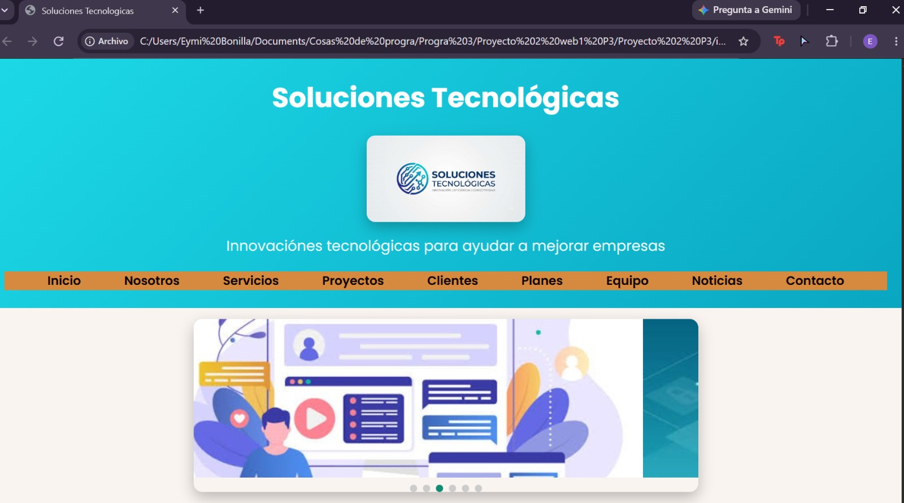
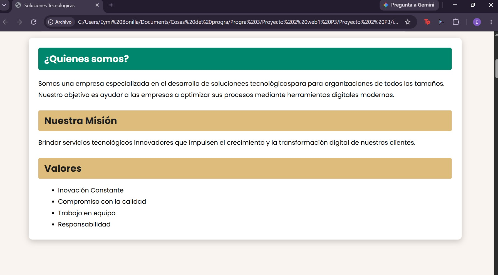
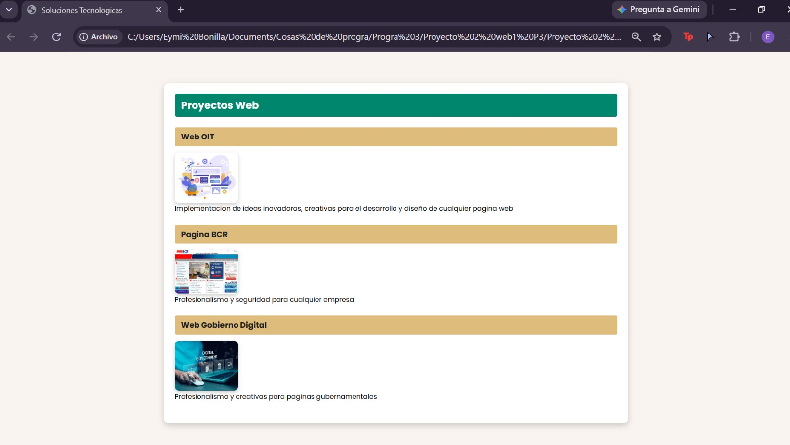
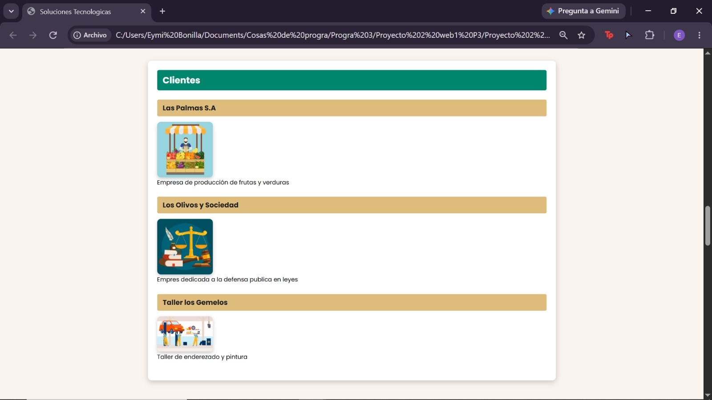
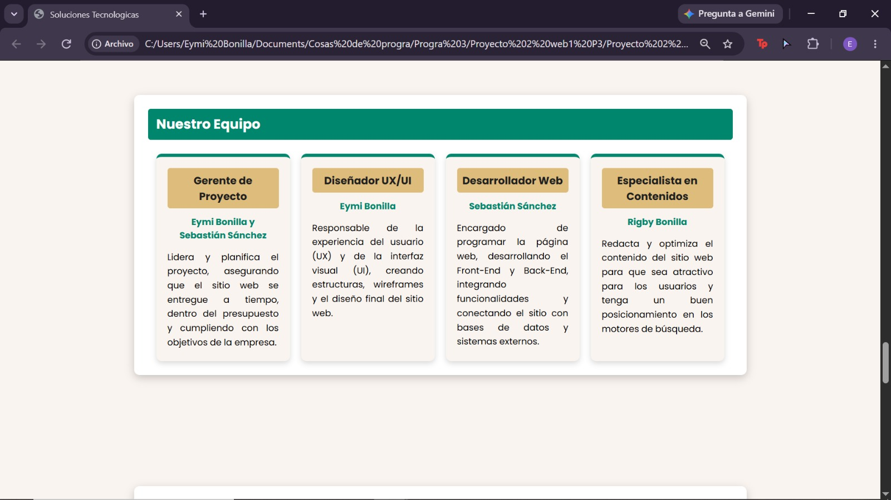
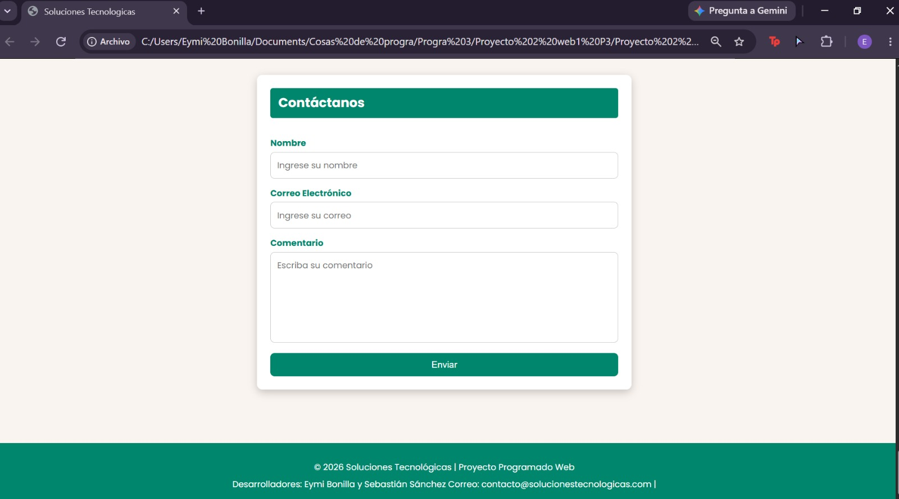

Proyecto académico de programación 3
El proyecto consiste en el desarrollo de una página web para la presentación de servicios ofrecidos por una empresa de tecnología
En esta parte del proyecto se muestra el inicio del proyecto web donde se recibe al usuario con el logo de la empresa y el menu

En esta sección se muestra la información sobre la empresa

En esta sección se muestra los proyectos realizados por la empresa

En esta sección se muestra la variedad de clientes que ha tenido la empresa y su alcance

En esta sección se muestra un poco más sobre los desarrolladores de la empresa y su experiencia profesional

En esta sección se muestra un formulario de contacto para que los usuarios puedan comunicarse con la empresa

Se obtuvo el rol de programadora junto a mi compañero, donde se tuvo que trabajar en equipo para lograr el objetivo del proyecto, el manejo de error y la comunicación efectiva.